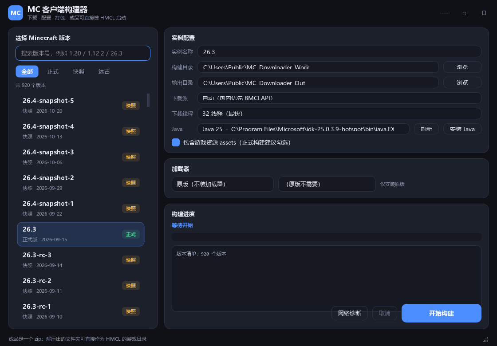

v1.2 · Windows 10 / 11 64 位
不用启动器，
也能把 Minecraft 装明白
选版本、选加载器，自动下载原版、依赖库和资源，调用官方安装器装好 Forge / OptiFine / Fabric / Quilt，最后打包成一个 zip。 解压出来的文件夹，HMCL 直接能启动。

该有的都有
从版本清单到最终 zip，一条链全自动
▦
900+ 全量版本
正式版、快照、远古 Alpha / Beta，支持搜索和类型筛选。
◈
四大加载器
Forge（新旧 installer）、OptiFine（官方 Patcher）、Fabric、Quilt。
☕
顺手装 Java
内置 Mojang 官方运行时 8 / 16 / 17 / 21 / 25，装完自动进列表。
⇅
32 线程下载
多源自动回退、SHA-1 校验、按哈希缓存，失败自动换源重试。
◐
离线兜底
版本清单接口不可用时，自动切换内置清单，列表照样显示。
◎
网络诊断
DNS、443 端口、HTTPS、系统代理、时间偏差，一键定位问题。
三步出包
不需要懂 version JSON，也不需要手动补库
选版本
左侧挑 Minecraft 版本，右侧决定要不要装加载器。
点构建
选好 Java 和输出目录，点「开始构建」，进度和日志全程可见。
拿去启动
解压生成的 zip，把文件夹作为 HMCL 的游戏目录，或合并 versions / libraries / assets。
系统要求
- Windows 10 / 11 64 位
- 已安装 Java（工具也能帮你装）
- 建议预留 5 GB 以上磁盘空间
- 需要能访问 Mojang 或 BMCLAPI
常见问题
- 首次启动慢：单文件 exe 要先解压，5–10 秒正常
- 杀毒误报：PyInstaller 单文件常见，加信任即可
- Forge 1.13+ 不能叠 OptiFine，工具会明确提示
- 只支持 64 位，Win7 不行